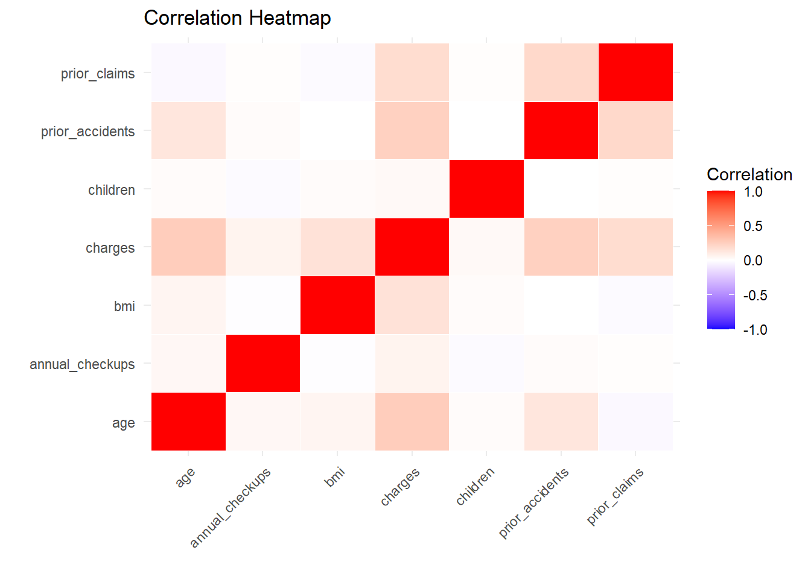
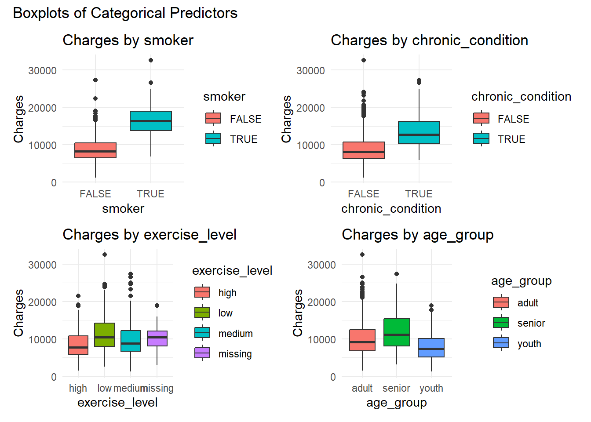

Rows: 1,100
Columns: 14
$ customer_id <chr> "C100000", "C100001", "C100002", "C100003", "C100004…
$ age <dbl> 48, 40, 50, 62, 39, 39, 63, 52, 36, 49, 36, 36, 45, …
$ sex <chr> "female", "male", "female", "male", "female", "femal…
$ region <chr> "east", "west", "south", "north", "east", "west", "e…
$ bmi <dbl> 24.8, 29.5, 18.3, 25.5, 27.3, 23.3, 23.9, 24.8, 28.6…
$ children <dbl> 0, 1, 2, 5, 2, 4, 3, 2, 0, 2, 2, 2, 1, 1, 1, 1, 0, 3…
$ smoker <chr> "no", "no", "no", "yes", "no", "no", "no", "no", "no…
$ chronic_condition <chr> "no", "no", "no", "no", "no", "no", "no", "no", "yes…
$ exercise_level <chr> "high", "medium", "high", "medium", "medium", "high"…
$ plan_type <chr> "basic", "basic", "standard", "basic", "basic", "sta…
$ prior_accidents <dbl> 0, 0, 0, 0, 0, 0, 0, 0, 0, 1, 0, 1, 0, 0, 0, 0, 0, 0…
$ prior_claims <dbl> 0, 1, 0, 0, 1, 0, 0, 0, 1, 0, 0, 1, 0, 1, 3, 0, 0, 0…
$ annual_checkups <dbl> 1, 4, 3, NA, 0, 2, 1, 2, 3, 2, 3, 3, 4, 4, 2, 1, 2, …
$ charges <dbl> 6439.10, 8274.06, 5190.99, 14500.35, 6534.40, 8026.3…Rapport
1 Syfte
Ett försäkringsbolag har beställt en analys av deras historiska kunddata i syfte att undersöka vilka variabler som påverkar försäkringskostnaderna mest. Målet är att utreda datan och genomföra en regressionsanalys som förhoppningsvis kan användas som beslutsstöd för framtida kunder.
2 Metod
2.1 Dataförståelse
Datasetet består av 1100 observationer och 14 variabler. Av dessa 14 variabler är hälften numeriska och den andra hälften kategoriska.
2.2 Datastädning och förberedelse
2.2.1 Saknade värden
# A tibble: 69 × 14
customer_id age sex region bmi children smoker chronic_condition
<chr> <dbl> <chr> <chr> <dbl> <dbl> <chr> <chr>
1 C100003 62 male north 25.5 5 yes no
2 C100016 29 male north NA 0 no no
3 C100027 47 male south NA 4 no yes
4 C100057 38 male east NA 0 no yes
5 C100084 31 female south 22.9 3 no no
6 C100088 35 female west 32.4 0 no no
7 C100138 53 male east 32.7 0 no yes
8 C100183 48 female south 24.2 3 no yes
9 C100190 36 female west NA 1 no no
10 C100199 27 female south NA 1 no no
# ℹ 59 more rows
# ℹ 6 more variables: exercise_level <chr>, plan_type <chr>,
# prior_accidents <dbl>, prior_claims <dbl>, annual_checkups <dbl>,
# charges <dbl>Datasetet har 3 kolumner med saknade värden: exercise_level (22) som är kategorisk, samt två numeriska variabler: annual_checkups(20)och bmi(28). Med tanke på att datasetet inte är så stort (består av 1100 observationer och 14 variabler) och att antalen saknade värdena är så få så lades prio på att ha kvar dem raderna vi kunde. Dem numeriska saknade värdena hanterades genom att inputera medianen av värdena, medan dem kategoriska (exercise_level) hanterades genom att skapa en egen kategori för saknade värden = missing.
2.2.2 Nya variabler
2 nya variabler skapades - det tillåter en lättare jämförelse mellan grupper och prissättningen, det ger en tydligare beskrivning när man jämför relationer, jobbar med regressionsmodeller samt för att se skillnaden mellan dem olika grupperna i visualiseringarna. - bmi_group - skillnaden mellan min och max värdet av bmi användes för att sedan dela upp siffrorna i 3 lika kategorier: lower(17-26), average(27-35) & higher(36-44) - age_group - här använde jag mig av age och delade upp siffrorna i klassiska åldersgrupper för att lättare kunna identifiera trender mellan grupper med liknande situationer - youth(18-24), adult(25-59), senior(60+)
2.3 Beskrivande analys
Med tanke på att vi har flera variabler att jämföra så har jag delat upp analysen i numeriska och kategoriska variabler:
2.3.1 Numeriska variabler
Dem numeriska variablerna (age,bmi,children,prior_accidents,prior_claims,annual_checkups) jämfördes i en korrelations heatmap mot charges för att utreda vilka variabler hade starkast relation till försäkringskostnaderna (Figur 1).

Heatmappen visar att dem numeriska variablerna med högst korrelation till charges är age( 0.26), prior_accidents (0.24) och prior_claims (0.18). Det betyder att dessa 3 variabler borde inkluderas i en prediktiv model även om korrelationerna inte är väldigt höga (ligger under 0.5), vilket kan innebära att korrelationen blir starkare ihop med visa kategoriska variabler.
2.3.2 Kategoriska variabler
För kategoriska variabler (sex, region, smoker, chronic_condition, exercise_level, plan_type, bmi_group, age_group)skapades en funktion som kalkylerade varje prediktors relatiion charges genomsnitt, median och standard deviation samt skapade en boxplot som visade relationen. Rankning på dem starkaste kategoriska prediktorerna är smoker på första plats, följt av chronic_condition. Sedan har vi andra ganska starka prediktorer som exercise_level, age_group och plan_type. Med tanke på att dem kategoriska variablerna var så tydligt starkare än dem numeriska, valde jag att gå vidare med följande: smoker, chronic_condition, exercise_level, age_group och plan_type.

3 Regressionsanalys
3.0.1 Linjär regressionsmodel
Jag började med en linjär regressionsmodell av dem 5 starkaste prediktorerna jag hade hittat: smoker, chronic_condition, exercise_level, age_group och plan_type.
Call:
lm(formula = charges ~ smoker + chronic_condition + exercise_level +
prior_accidents + prior_claims + plan_type, data = ready_data[train_index,
])
Residuals:
Min 1Q Median 3Q Max
-9290.9 -1728.0 -82.8 1529.2 16851.9
Coefficients:
Estimate Std. Error t value Pr(>|t|)
(Intercept) 5618.8 253.1 22.198 < 2e-16 ***
smokerTRUE 7472.2 241.1 30.998 < 2e-16 ***
chronic_conditionTRUE 4022.2 208.7 19.270 < 2e-16 ***
exercise_levellow 1990.9 270.6 7.358 4.33e-13 ***
exercise_levelmedium 839.0 240.8 3.484 0.000518 ***
exercise_levelmissing 1109.2 660.5 1.679 0.093447 .
prior_accidents 1232.1 186.5 6.606 6.86e-11 ***
prior_claims 800.8 172.1 4.652 3.80e-06 ***
plan_typePremium 1476.5 265.8 5.554 3.70e-08 ***
plan_typeStandard 625.6 206.8 3.025 0.002560 **
---
Signif. codes: 0 '***' 0.001 '**' 0.01 '*' 0.05 '.' 0.1 ' ' 1
Residual standard error: 2651 on 870 degrees of freedom
Multiple R-squared: 0.679, Adjusted R-squared: 0.6757
F-statistic: 204.5 on 9 and 870 DF, p-value: < 2.2e-16Smoker och chronic_condition har dem högsta koefficienterna av dem 5 prediktorerna som valdes ut. Multiple R-squared ligger på 0.68 vilket skulle kunna förbättras, så med tanke på det och i syfte att se att ingen annan prediktor missats skapade jag en andra linjär regression med alla variabler.
Call:
lm(formula = charges ~ age + sex + region + bmi + children +
smoker + chronic_condition + exercise_level + plan_type +
prior_accidents + prior_claims + annual_checkups + age_group +
bmi_group, data = ready_data)
Residuals:
Min 1Q Median 3Q Max
-8915.9 -1495.2 -103.4 1345.7 17483.0
Coefficients:
Estimate Std. Error t value Pr(>|t|)
(Intercept) -1548.52 974.91 -1.588 0.11250
age 64.76 8.86 7.310 5.21e-13 ***
sexmale -171.03 140.52 -1.217 0.22384
regionNorth 72.11 205.31 0.351 0.72548
regionSouth 298.60 196.40 1.520 0.12872
regionWest 210.02 205.68 1.021 0.30744
bmi 161.10 29.80 5.405 7.96e-08 ***
children 75.43 47.68 1.582 0.11392
smokerTRUE 7421.96 182.95 40.568 < 2e-16 ***
chronic_conditionTRUE 3836.26 167.57 22.894 < 2e-16 ***
exercise_levellow 1486.95 210.69 7.057 3.03e-12 ***
exercise_levelmedium 514.55 189.25 2.719 0.00666 **
exercise_levelmissing 753.32 523.05 1.440 0.15009
plan_typePremium 1533.58 207.74 7.382 3.11e-13 ***
plan_typeStandard 704.15 160.92 4.376 1.33e-05 ***
prior_accidents 1040.03 143.85 7.230 9.14e-13 ***
prior_claims 881.67 136.54 6.457 1.61e-10 ***
annual_checkups -4.37 61.74 -0.071 0.94358
age_groupsenior 465.71 313.51 1.485 0.13771
age_groupyouth 208.53 317.95 0.656 0.51205
bmi_grouphigher 370.74 391.61 0.947 0.34400
bmi_grouplower 112.05 251.37 0.446 0.65587
---
Signif. codes: 0 '***' 0.001 '**' 0.01 '*' 0.05 '.' 0.1 ' ' 1
Residual standard error: 2313 on 1078 degrees of freedom
Multiple R-squared: 0.7492, Adjusted R-squared: 0.7443
F-statistic: 153.4 on 21 and 1078 DF, p-value: < 2.2e-16Residual standard error har nu gått ner från 2594 till 2313 vilket visar på att tillagda variabler ger lite mer precision i beräkningarna inte bara noise. Multiple R-squared har nu gått upp från 0.68 till 0.75 vilket innebär att modellen är något starkare än i första versionen. Koefficienterna visar liknande trender som tidigare - rökare med kronisk sjukdom, som inte tränar mycket och har premium paket betalar högst. En variabel som inte visade sig ha lika stor betydelse som trott är age_group. Istället visade sig 2 andra prediktorer ha högre påverkan på charges: prior_accidents och prior_claims. Detta ändrade mitt perspektiv om vilka dem topp prediktorerna egentligen var - så jag ändrade det från smoker, chronic_condition, exercise_level, age_group och plan_type till smoker, chronic_condition, exercise_level, prior_accidents, prior_claims och plan_type i en ny modell.
3.0.2 Lasso regressionsmodell
Den första modellen - linjär regression är enkel och lätt att tolka som modell men den har hög risk för overfitting samt att den inte hanterar multikollinearitet väl. För att inte riskera att missa dessa faktorer så valde jag att testa ytterligare regressionsmodeller - lasso regression, som valdes för att: - Lasso krymper orelevanta koefficienter till noll - Bra på att identifiera starkaste prediktorer - Bättre på att identifiera när variabler är korrelerade än linjär regression.
Length Class Mode
a0 71 -none- numeric
beta 1491 dgCMatrix S4
df 71 -none- numeric
dim 2 -none- numeric
lambda 71 -none- numeric
dev.ratio 71 -none- numeric
nulldev 1 -none- numeric
npasses 1 -none- numeric
jerr 1 -none- numeric
offset 1 -none- logical
call 4 -none- call
nobs 1 -none- numeric3.0.3 Modelljämförelse
Målet är att välja en regressionsmodell som kan användas som stöd vid framtida prissättning med liknande kunder. Med det i åtanke ville jag nu testa dem fyra modellernas prediktionsförmåga genom att dela upp datan i test och train set och sedan jämföra RMSE, MAE & R2.
4 Resultat
# A tibble: 4 × 4
model RMSE MAE R_squared
<chr> <dbl> <dbl> <dbl>
1 Linjär (top prediktorer) 2260. 1796. 0.715
2 Linjär (alla variabler) 2116. 1688. 0.750
3 Lasso (top prediktorer) 2258. 1795. 0.716
4 Lasso (alla variabler) 2112. 1695. 0.751När man jämför dem linjära och lasso modellerna är skillnaderna försumbara.Detta betyder att datasetet är stabilt och att korrelationerna mellan variablerna inte var så komplexa att dem inte kunde fångas up av en linjär regressionsmodell. Anledningen kan vara att vi inte har så många variabler och att korrelationerna mellan dem inte är så komplexa. Resultaten visar att dem fulla modellerna med alla prediktorer presterar bättre än fokusmodellerna vilket är fullt rimligt. Fokusvariablerna som valdes gav omkring 71.5% av variationen i charges vilket är ganska bra, när man tänker på att i modellerna med fulla variabler så var resultatet 75%. Det visar att fokus prediktorerna som valdes var dem som hade högst påverkan på försäkringskostnaden.
5 Slutsatser
Dem starkaste prediktorerna av försäkringskostnader var smoker, chronic_condition, exercise_level, prior_accidents, prior_claims och plan_type. Detta bekräftades av både graferna (boxplots och heatmap) samt av regressionsmodellerna. Sammantaget pekar resultaten på att livsstilsfaktorer (som rökning och träningsnivå), medicinska faktorer (chronic_condition) och tidigare skadehistorik är centrala drivkrafter bakom försäkringskostnaderna.
6 Begränsningar
För att börja med så var datasetet relativt litet så skulle behöva utökas med fler observationer samt mer variabler för en bättre helhetsbild - vi skulle kunna få in faktorer som inkomst, utbildningsnivå, etc. Vi hade 2 kolumner med saknade värden som hanterades genom att inputera medianen vilket i situationen är rimligt men kan påverka precision. Den tredje kolumnen som saknade värden hanterades genom att skapa en ny kategori - “Missing” så vi kunde ha kvar observationerna. Än en gång - rimlig lösning men svårt att analysera datan i efterhand. 2 nya variabler skapades - bmi_group som baserades på att dela upp siffrorna lika i 3 grupper (lower, average, higher) och age_group som baserade sig på klassiska åldersgrupper som använts i hälsostudier (youth, adult, senior). Dessa grupperingar underlättar analys men kan förenkla verkligheten såpass att den döljer variationer inom grupperna. Linjär regressionsmodellen förutsätter linjära samband, normalfördelade residualer och homogen varians. Den har hög risk för overfitting samt att den inte hanterar multikollinearitet väl. Ett alternativ var då att använda mig av lasso-modellen men den är känslig för skalning och korrelation vilket kan innebära att starkt korrelerade prediktorer påverkar vilka variabler som väljs bort.
7 Rekommendationer
Nästa steg i projektet skulle kunna vara att samla in fler relevanta variabler som nämndes innan samt att utöka antalet observationer. Man skulle även kunna testa datan på icke-linjära modeller som Random Forest för att fånga komplexa samband vilket annars kan missas. I samma veva skulle man även kunna validera modellen på ett helt nytt dataset för att se om overfitting var ett problem. Ett möjligt fokusområde kunde vara att undersöka interaktionseffekter mellan olika variabler för potentiellt viktiga insikter i kundbefolkningen. Exempelvis relationen mellan rökare och träningsnivå eller ålder och bmi.
8 Självreflektion
Projektet var kul men jag kände mig lite osäker hur man bäst analyserade alla möjliga prediktorer så min beskrivande analys kan absolut förbättras vilket påvisades i regressionsanalys delen där jag märkte att jag valt fel prediktorer att fokusera på. Den här delen tyckte jag var svårast speciellt med skillnaderna i hur man kan analysera numeriska och kategoriska variabler. Själva regressionanalys delen tyckte jag var kul och ville testa lite olika modeller för att se om jag kunde få ett bättre resultat genom lasso regression. Jag tror jag har uppfyllt kraven för VG genom att analysera dem olika modellerna, dess styrkor och svagheter samt testa alternativ för att se om jag kunde hitta något annorlunda.